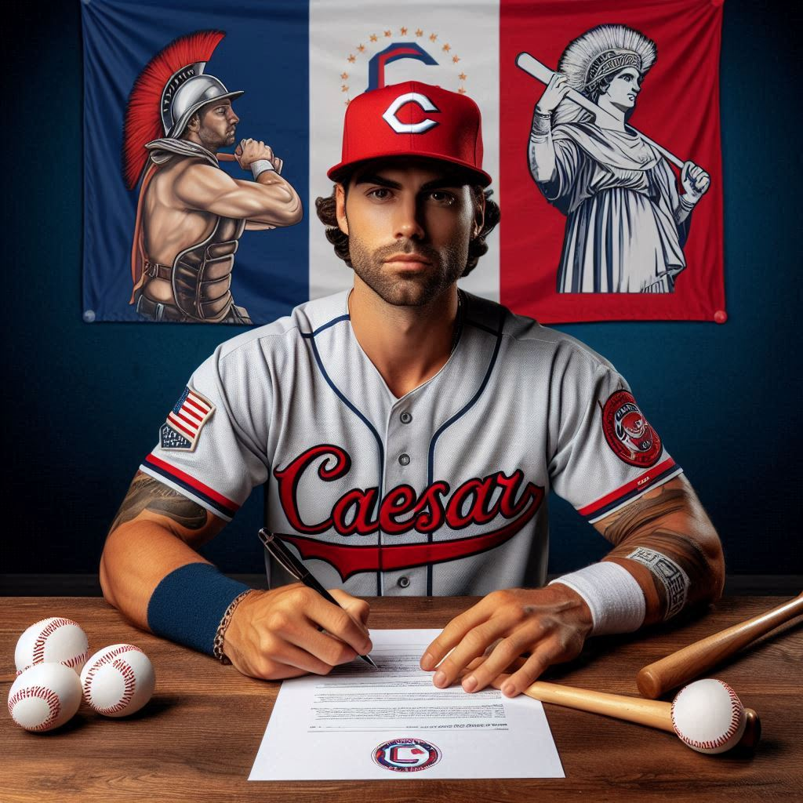
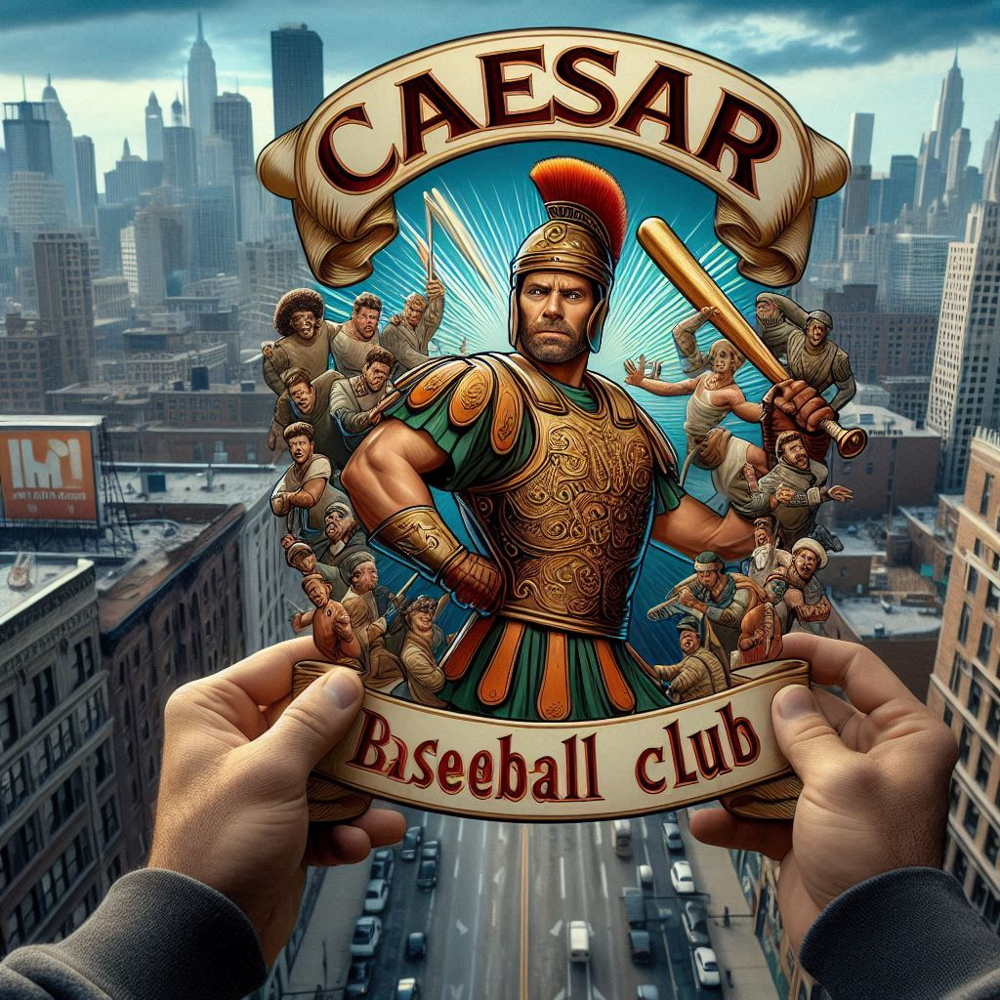
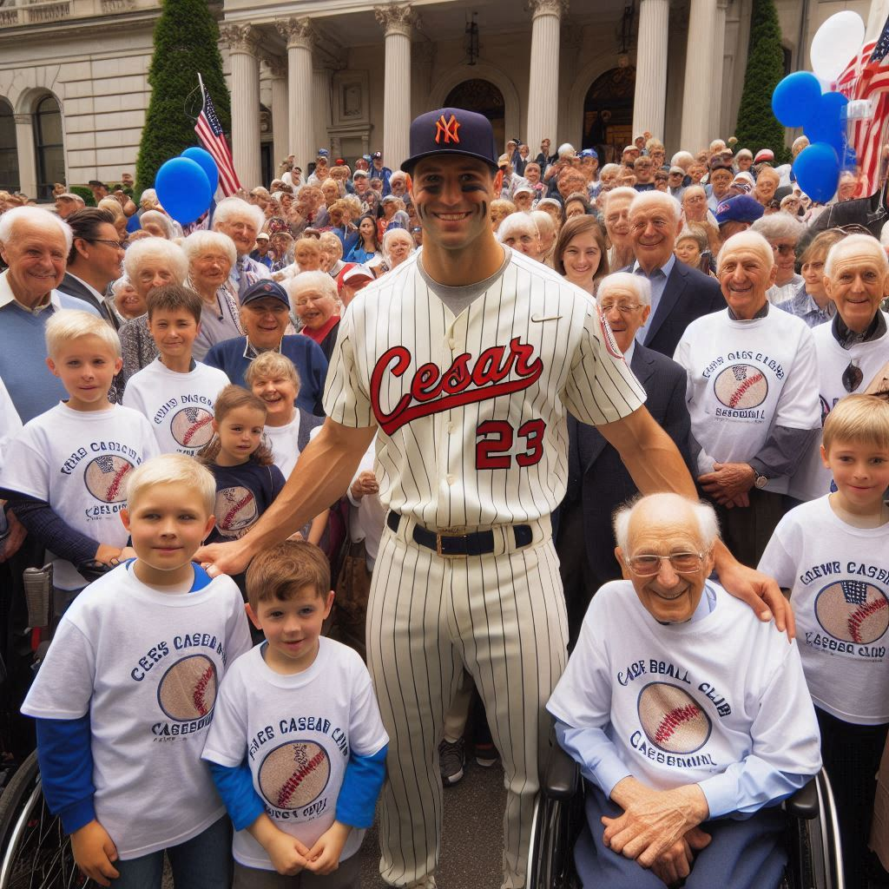

Acerca de nosotros
El Caesar Baseball Club es una destacada institución deportiva dedicada a la promoción y desarrollo del béisbol en la comunidad. Fundado en 1985, el club se ha convertido en un
referente en la región, ofreciendo programas para jóvenes y adultos que fomentan no solo habilidades deportivas, sino también valores como el trabajo en equipo, la disciplina
y la perseverancia. Con instalaciones modernas y entrenadores calificados, el Caesar Baseball Club busca cultivar el talento local y brindar oportunidades para que los jugadores
alcancen su máximo potencial.
A lo largo de los años, el Caesar Baseball Club ha participado en diversas ligas y torneos, obteniendo reconocimientos que destacan su compromiso con la excelencia y el espíritu
competitivo. Además de las actividades en el campo, el club también se involucra en la comunidad a través de eventos y programas de capacitación, promoviendo la inclusión y el
amor por el béisbol. Con una sólida base de aficionados y un enfoque en el desarrollo integral de sus miembros, el Caesar Baseball Club continúa creciendo y dejando una huella
positiva en el deporte local.
Caesar Baseball Club ficha a la estrella internacional John "The Rocket" Rodríguez
El Caesar Baseball Club ha fichado a la estrella internacional John "The Rocket" Rodríguez, reconocido como uno de los mejores jugadores de la última década. Con un contrato mas humilde de lo normal,
su llegada marca un hito en la historia del equipo. El manager del club expresó su entusiasmo, destacando que Rodríguez puede cambiar el rumbo de los partidos. En su presentación,
Rodríguez mostró su compromiso y deseo de ayudar al club a ganar títulos. La expectación entre los aficionados es alta, habiéndose agotado las entradas para su primer partido.
Su fichaje representa una gran esperanza para el rendimiento del equipo en la próxima temporada.

El Caesar Baseball Club inicia la temporada con gran expectativa
El Caesar Baseball Club inició su temporada 2024 con un emocionante partido inaugural frente a un equipo local. A pesar de la reñida competencia, la energía del nuevo fichaje, John "The Rocket"
Rodríguez, destacó en el juego. El manager del equipo subrayó la dedicación de los jugadores en la pretemporada, expresando que están listos para competir por el título. Los aficionados, que
llenaron el estadio, vibraron con cada jugada y mostraron gran optimismo. La jornada culminó en una emocionante victoria para el club. Este triunfo genera altas expectativas para el resto de
la temporada.

El Caesar Baseball Club se une a la comunidad en un evento benéfico
El Caesar Baseball Club participará en un evento benéfico el próximo mes, donde jugadores, incluida la estrella del equipo, se unirán a aficionados y miembros de la comunidad.
El objetivo del evento es recaudar fondos para organizaciones que apoyan a jóvenes deportistas. Habrá diversas actividades como juegos, rifas y sesiones de autógrafos. El capitán del equipo
expresó su entusiasmo por conectar con los seguidores y resaltar el impacto positivo del deporte en la vida de los jóvenes. Se invita a todos a participar en esta causa noble. Se espera que
el evento sea un gran éxito, fortaleciendo el vínculo entre el club y su comunidad.
